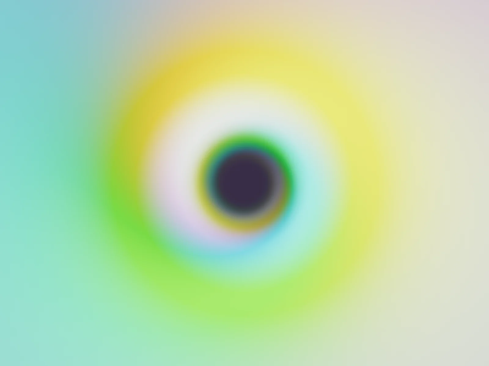
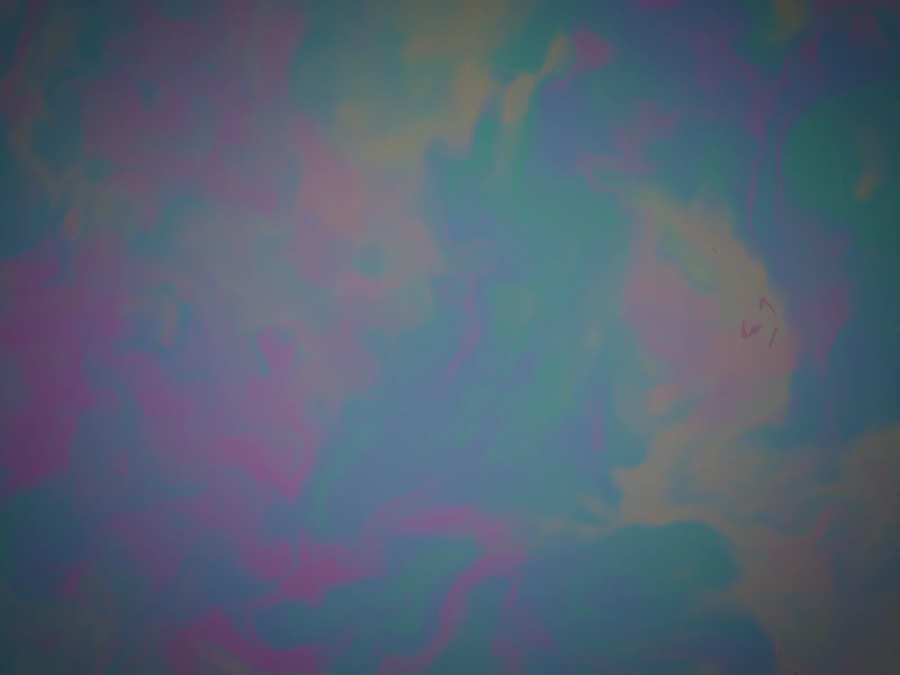
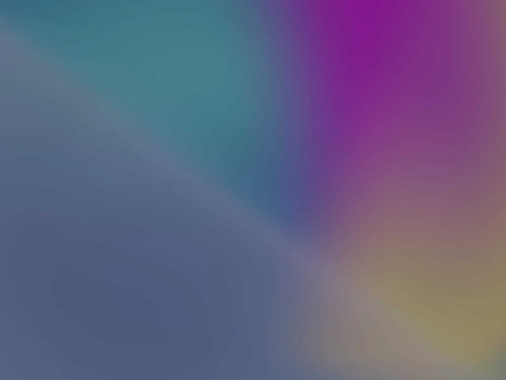

Gradient Shaders
Animated WebGL gradient studies exploring color, flow, liquid displacement, and glass-like motion. Each shader is a single self-contained HTML file.

Prism Helix
A full-frame chromatic tunnel using 120-degree RGB phase offsets on a twisting cylindrical SDF, with no sphere occlusion.
Oklab Flow
A soft multicolor gradient flowing through perceptually uniform Oklab color space, with fluid domain-warped motion.

Mesh Drift
A premium mesh-gradient field with layered Oklab blending, soft central focus, and drifting chroma seams.
Glass Sunset
A refracted warm-to-cool sunset gradient with soft glass-like distortion and polished minimal finishing.

Iridescent Fold
A luminous blue gradient field wrapped by a magenta-yellow edge sweep and a translucent glass fold with restrained motion.
Ember Sprint
A hot red-orange liquid gradient with a bright flare seam, molten folds, and fast glassy motion.
Cool Bloom
A teal-blue-green liquid bloom with displaced folds, cool glass transitions, and drifting motion.
Blush Wave
A blush-pink liquid field with layered magenta folds, creamy highlights, and lively flowing motion.
Golden Drift
A warm amber-gold liquid gradient with luminous central heat, molten folds, and rolling motion.
Ultraviolet Orbit
A saturated violet orbital gradient with circling glass motion, a dark core, and rotating purple light.